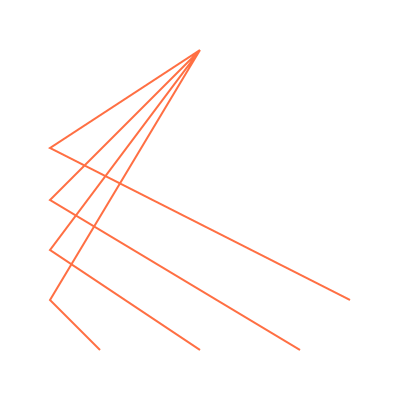
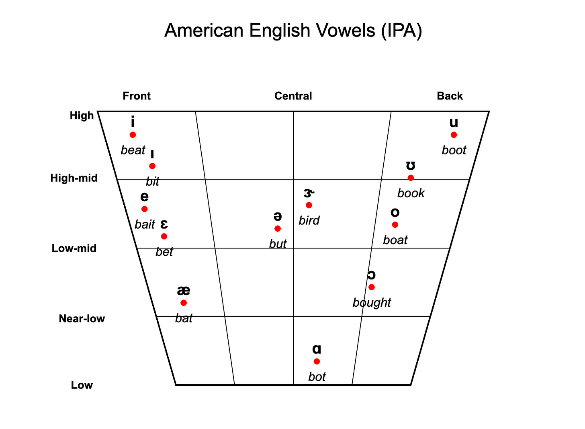
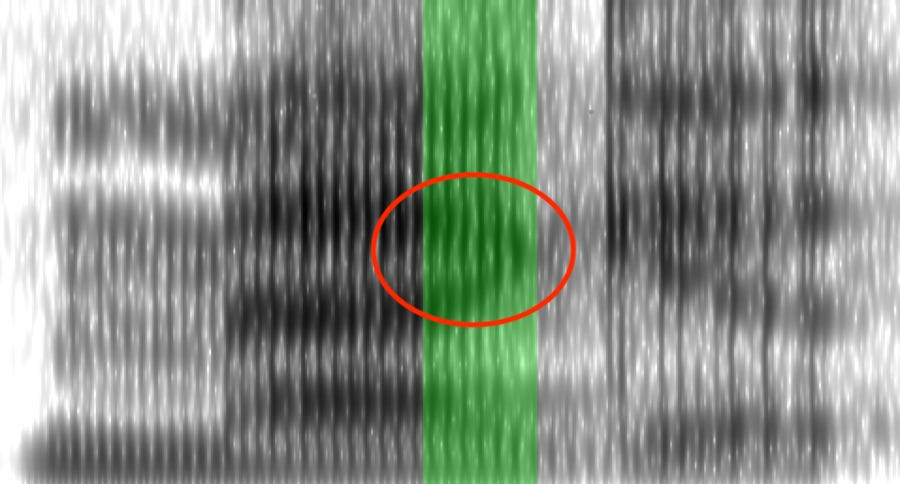
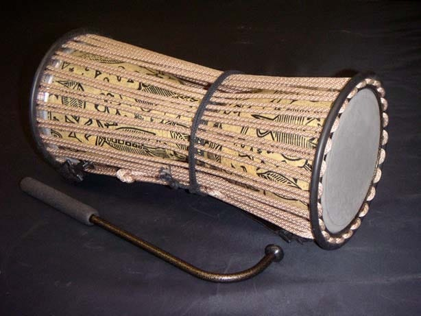

Whistled languages
February 2026

If you can speak a language, you can usually also shout, sing, or whisper in it. In some languages, there’s another way of articulating words: whistling.
We take different modes of speech for granted—our brains can usually automatically translate the shouted or whispered version of a phrase into its spoken equivalent,1 and we usually pick up the shouted or whispered or sung mode of the language when we learn the spoken—so it’s hard to notice that something interesting is going on.
Take whispering. When you speak at a normal conversational volume, you push air through your vocal folds to vibrate them as you say the vowels or the “voiced” consonants. When you whisper, you clench your vocal folds to keep them from vibrating. This means that all of your whispered consonants are effectively “unvoiced.”
In English, sometimes the meaning of a word hinges on whether a particular sound in it was voiced or not, e.g. fan versus van (other aspects of the two sounds besides voicing, like the position of the tongue and lips, are identical).2 For this reason, we say that voicing is phonemic in English and that /f/ and /v/ are phonemes. But when you whisper, you never voice any consonant, and so “fan” and “van” are much harder to distinguish.3 Where the spoken mode of English has two phonemes (/f/ and /v/), the whispered mode of English essentially has one (/f, v/).
Whistling is much rarer than whispering. Julien Meyer, a linguist who studies whistled speech, has verified a whistled mode in just forty-two languages and heard unverified reports in forty-three more.4 And whistlers have a much narrower range of sounds to work with than whisperers, so often two to five spoken phonemes will get collapsed into a single whistled phoneme.
But whistlers generally recognize that they’re doing the same kind of thing when they whistle and whisper: taking a spoken sentence and converting it, sound by sound, into a new mode.
There’s no whistled form of English, but there are at least two communities that whistle in Spanish. This video has some subtitled examples of Spanish, as whistled on the Canary Islands:
Why whistle?
Whistlers typically live in places that are difficult to traverse, often mountainous and/or densely forested. Whistling allows them to communicate over medium distances—ranges of 1-2 kilometers are pretty common. The range record is 8 kilometers, recorded in Canary Islands on a day with exceptionally good conditions. In contrast, shouts can only be heard within half a kilometer or so under noisy conditions and only within two kilometers under good conditions. Plus, shouting rapidly tires out your throat, while whistlers have better endurance.
The pursed lip style of whistling that you probably use to whistle a tune is usually only used for short-range communication (50 meters or less). Long-distance whistlers typically use their fingers to get more volume, usually pressing one or two fingers into the blade of their tongues and closing their lips most of the way around their finger(s). There’s also a “cupped-hand” style of whistling that’s often used in areas with dense vegetation: by making a resonating cavity with their hand(s), whistlers can apparently achieve lower frequencies than they could with their mouth alone, which lets them use a larger range of pitches. Whistlers also sometimes use instruments like flutes.
Some common use cases for whistling:
- Hailing someone. Whistlers in Sierra Mazateca (a mountainous region in Mexico) will whistle another person’s name to get their attention before starting a spoken conversation.
- Communication between shepherd or farmers in different fields. For example, Turkish shepherds in a community near the Black Sea often whistle back and forth to each other all day, talking about the weather, joking, and sharing news.
- Communication between hunters. Hunters used whistled speech to coordinate. Lower-pitched human speech often startles prey, but high-pitched noises blend in with birdsong.
- Other medium-distance communications. In Sierra Mazateca, government announcements used to be transmitted into the mountains with whistling, though now walkie-talkies are preferred.
- Communications in loud environments. Whistles are high-pitched and carry well, so they’re useful for communicating in environments with lots of ambient noise, like marketplaces or near running water. Whistlers in Sierra Mazateca whistle to communicate in noisy restaurants. Mazateco children will sometimes have a parallel conversation with each other over whistles while their adults are speaking out loud in the same room.
- Night-time communication. Neighbors in Sierra Mazateca whistle to each other at night, as a way to communicate without having to leave their homes. The Akha and Hmong people in Northern Thailand and Laos use whistling for traditional courtship poetry, as did Kickapoo Indians in Mexico. Courtship whistling tend to place more emphasis on musicality and aesthetics and less emphasis on clearly articulating words—more like singing than shouting.
- Resistance to oppression. Outsiders usually cannot understand the whistled form of the language even if they can understand the spoken language; often they won’t even parse the whistles as speech. Amazigh (Berbers) in North Africa, Guanche on the Canary Islands, and various peoples in the southern China/northern Thailand/Laos area have used whistled speech to coordinate resistance against invaders. The whistled form of Béarnese (dialect of Occitan) is only used in the village of Aas in the French Pyrenees; and during World War Two, shepherds would keep a lookout for tax collectors from high meadows and whistle down a warning to the village. Also during the World War Two, Australian radio communicators used whistled Wam (a Papuan language) to make it more difficult for the Japanese to listen in.
Kids in whistler communities learn to understand whistles a few years after they learn to speak. This delay is due to some combination of whistling being inherently more difficult to learn and less exposure to whistles than ordinary speech—spoken language is usually much more common than whistled language indoors or around the village. Kids learn to produce intelligible whistles around the time that they learn to understand whistles, but usually they need to wait until their adult teeth have come in around the age of ten before being able to produce clear, loud whistles for long-distance communication.
Whistling is sometimes age- and gender-specific. For instance, in Sierra Mazateca, adult men, boys, and (maybe, sources disagree) girls all whistle, but adult women don’t whistle. Sizang children whistle, but give it up when they reach adulthood.
How does this work?
When you whistle, you’re usually emitting sound waves clustered around a single peak frequency. But when you speak, you’re emitting sound waves at a broad range of frequencies, with multiple distinct peaks, called formants.
The lowest frequency peak (the fundamental frequency) is the pitch of your voice. This is what you vary when you sing a melody or when you pronounce different tones in a tonal language. It’s controlled mostly by your vocal cords.
The first and second formants are controlled mostly by your nose and mouth, and these two formants together determine which vowel sound you hear. Specifically, the first formant determines vowel height, and the second formant determines vowel frontness. Height refers to the vertical position of the tongue in the mouth when the vowel is pronounces, and it’s the main feature distinguishing between the vowels in the English words “bit” and “bat.” Frontness is the horizontal position of the tongue in the mouth, and it’s the main feature distinguishing between “rot” and “rat.”

Imagine someone with a very deep voice saying some vowel sound, e.g., “eeeee.” Now imagine someone with a very high voice saying “eeeee.” The two sounds will be recognizably the same vowel, because even though the pitch of the voice is very different, the first and second formants are pretty similar.
Pronouncing consonants also involves manipulating formants. Nasal consonants (e.g., n, m) and liquids (e.g., l and r) mostly affect higher formants beyond the first and second and also produce distinctive “antiformants,” frequencies at which you’re emitting almost no sound. When you pronounce a velar stop (e.g., g, k), the second formant and third formant converge (the so-called “velar pinch”). Alveolar stops (e.g., d, t) have very high second formants.

{kind=link}
When you whistle you can only produce one pitch at a time, so whistlers can whistle at most one of pitch, first formant, and second formant. Which one they choose seems to come down to whether the language they’re encoding is a tonal language: whistlers of tonal languages whistle the tone of each vowel, while whistlers of non-tonal language whistle the second formant (the frontness of each vowel).
Formant whistlers aren’t always whistling the exact frequency of the second formant for each vowel. For one thing, people often can’t whistle low enough to replicate the second formant for far-back vowels like “u.” Also, whistlers sometimes “spread out” the pitches of the vowels so that there’s a larger contrast, making whistled “i” (a very front vowel) significantly higher than the second formant of spoken “i.” And sometimes whistlers will shift all their vowels higher if they’re communicating over long distances, since higher signals carry farther.5 But the relative pitches of the vowels are preserved.
Formant whistlers can convey the consonants before or after a vowel by modulating the beginning or end of the whistle. For instance, alveolar consonants (d and t) have high formants in spoken speech. So when you want to whistle “ta”, you start high and then lower the pitch of your whistle down to the typical pitch for “a”. If you were whistling “at”, you’d raise the pitch of your whistle after the “a.”
Just as with the vowels, whistlers tend to exaggerate the formants associated with consonants to increase the contrast. The pitch of “t” in whistled Canary Islands Spanish is much higher than its second formant in spoken Canary Islands Spanish (3000 Hz vs. 1800 Hz). This not only differentiates it from other consonants, but it also puts it a bit higher than “i”, the highest vowel.
Each consonant gets a “locus”, usually out of vowel range, that the whistler whistles up or down after the vowel. Formant-based whistled languages typically distinguish between two or four loci.
There are even more ways to distinguish whistled consonants. These are usually based on features of the spoken consonants. For example, some consonants are obstruents—which means that when you say them, you partially or fully block the flow of air out of your mouth—while other consonants (sonorants) have uninterrupted airflow.6 So when whistlers whistle obstruents, they’ll stop whistling for a second before continuing on to the next sound, but they don’t pause when whistling sonorants. Whistlers can differentiate voiced and voiceless obstruents based on the length of the pause—voiceless obstruents get a longer pause than voiced.
I’ve been able to find less information about tone whistlers, but it sounds like those whistlers distinguish consonants and vowels by volume (vowels are whistled louder than consonants). And, like formant whistlers, they can also distinguish voiceless obstruents from voiced obstruents from sonorants.
How well does this work?
Whistlers end up compressing multiple spoken phonemes into a single whistled phoneme.
For formant whistlers, this can almost halve the total number of phonemes they have to work with. The dialect of Greek spoken in the village of Antia on Evia Island has fourteen consonants and five vowels, but whistled Greek can only distinguish between seven consonants and three vowels. The dialect of Spanish spoken on the Canary Islands distinguishes fifteen consonants and four or five vowels, but the whistled form (Silbo) only distinguishes eight consonants and four vowels.7
Meyer does not compare the spoken versus whistled phonemic inventories for tone whistlers, but just going off just the tricks above, they’d end up with, effectively, whistled inventories consisting of one vowel, three consonants, and however many tones the spoken language has. For a language with only a few tones, this is likely not enough to communicate non-formulaic statements. But some languages have a ridiculous number of tones—e.g., Mazatec has 9-17, depending on dialect—and that begins to look like a more workable situation.
But one way or another, in some languages, whistling is good enough to do some real talking. Müller cites a study on the Greek whistlers of Antia that found that experienced whistlers had a 95% success rate at understanding whistled sentences in a natural conversation (they were substantially worse at decoding nonsense syllables). And researchers describe whistlers carrying out relatively complicated and non-formulaic communications over whistles: e.g., a shepherd reading a newspaper aloud in whistles to his friend or two men haggling over the price of some corn.
Whistlers also have some other strategies to overcome the noisiness of their medium. For example, Wayãpi whistlers habitually repeat their whistled sentences twice in a row for redundancy even if it’s not requested. You can also rephrase or whistle more slowly if your interlocutor is struggling to understand you.
Whistling communities often use whistling in connection with particular activities (e.g., hunting, herding, farming), and so whistlers often get very good at producing and understanding a restricted set of whistled words. Although this set can still be pretty large—the Turkish and Canary Islander whistlers have a “specialized” whistling vocabulary of two to four thousand words.
There’s no whistled form of English, but you can get a taste of it with Sine Wave Speech (SWS). SWS isolates a few formants from each spoken sound and plays pure tones at those frequencies. For me, SWS just sounds like a bunch of random whistles at first. But after I’ve heard the corresponding spoken sentence, when I re-listen to the whistles, it all clicks into place, and I start to parse it as speech.
(Note that SWS is even easier to understand than a whistled English would be, because you get multiple formants at a time!).
Beyond whistling
Just as you can whistle speech, you can also play it on instruments, like drums, fiddles, whistles, or trumpets (I will collectively call these “drummed languages”).8 Drummed speech is usually even lossier than whistled speech. Drummers can usually just reproduce the tone and occasionally a tiny amount of information about the syllable structure.9
The tone is typically represented by the pitches played on the instrument. The minimal version of this looks like a slit gong, a hollowed-out log with an asymmetric slit carved on the top. If you strike the log on one side of the slit, you get a high pitch; on the other side, you get a lower pitch—perfect for expressing a language with two level tones.
Other instruments permit a wider range of tones. For instance, Northern Toussian musicians of Burkina Faso play xylophones that let them express the three level tones of their language by striking the appropriate keys. They can also emulate rising and falling tones by playing a low key and then a high key in quick succession.
The Yoruba talking drum takes this even further. This is an hourglass-shaped drum consisting of two membranes connected by cords. The drummer squeezes the cords to tighten the membranes and change the pitch of the drum. The most expressive of the “talking drums”, the Lya-Ilu, has a range of about an octave. By squeezing the drum while the membranes are still vibrating, drummers can even replicate rising or falling tones.

But even if your instrument totally replicates the tones of your language,10 that’s still usually not enough information to recover the original meaning of the words.
One common trick is to replace short, ambiguous words with longer stock phrases that are less ambiguous. For example, in the Kele language, the words for “moon” and “fowl” had the same tone pattern and were thus indistinguishable on the drum. So when a Kele drummer wanted to refer to the moon, he drummed the phrase “the moon looks down at the earth” and when he wanted to say “fowl”, he drummed “the fowl, the little one which says kiokio”. These longer phrases have different tone patterns.
Of course, this means that if you want to drum or understand drummed language, you had to learn a bunch of new stock phrases. And it means that drummed languages have a limited vocabulary—you can only use words that have standard stock phrases, or else you risk confusing your audience.
The most active drummed languages would regularly add new words as they learned about new concepts. Drummed Kele, for instance, added new stock phrases to represent the Christian god (“the father who came down from heaven”) and a river steamer (“a canoe, very large, of the white man”). Personal names are also replaced by longer phrases, usually a motto or a brief description of the person.11
Drum languages are often conservative, and sometimes a stock phrase may use a word or expression that’s now obsolete in the spoken language. Drummers sometimes forget the exact wording of a stock phrase and fill in the blanks with words that fit the tonal pattern, like someone trying to recall a longer phrase from its acronym.
The largest drums and gongs are audible for up to twenty miles under good conditions, and the range can be extended by having drummers rebroadcast the messages that they heard. Historically, drummed messages have been used to muster armies, call for assemblies, announce births, deaths, and marriages, warn of natural disasters, and organize search parties. Bora drummers announced when meals were ready.
In West Africa, drummers are a mainstay at royal courts. Dagbani drummers and fiddlers announce events and retell histories at court on their instruments. Akan drummers narrate the movements of the chief in detail, down to giving a running commentary when the chief is offered a drink. Akan chiefs also customarily choose a brief motto which is played on the trumpets to herald their approach.12 Yoruba drummers summon visitors to court and announce their names when they arrive.
Kele drummers banged out encouragement to wrestlers as they circled each other at the start of a match. When the wrestlers began to grapple, the drummer would smoothly transition into a loud rhythmic roll, and after the match, the drummer would announce the name and the village of the winner. Bora men something had eating contests. Whoever could finish his bowl first would run over to the drums and announce his name and the name of the loser.
Drummed language is often incorporated into musical performances. Sometimes a melody might be constructed from a text: Akan drummers play a series of proverbs to accompany dancers. Or a musician might slip a bit of speech into an otherwise solely musical song. Akan and Jabo (Liberia) lead drummers sometimes play brief messages—encouraging the dancers, greeting new arrivals, or quoting an aphorism—while the rest of the drummers continue the song.
Drummed language also had military uses. I’ve already mentioned that drummers would rally people for war, but the drum could also disseminate propaganda, encouraging their own troops or discouraging the enemy. Efik gongs played proverbs like “being in bush does walker of road thing” (apparently a proverb reminding warriors that they could be ambushed) or “needle very small sews long cloth” (apparently a boast that a small Efik force could defeat even a much larger enemy army).
And drummed language, like whistling, is also often used for courtship. Young Gavião men and women (Brazilian Amazon) would respectively use flutes and bows to flirt with each other, both individually in private and en masse at festivals. In Thailand, Lahu boys would play the messages on the gourd reed organ outside girls’ houses at night, trying to convince the girls to come out to talk to them, and girls responded on their own gourd reed organ. Like other drummed languages, speaking on the gourd reed organ involved substituting longer, less ambiguous phrases for short words. Some of these phrases were archaic, but often cohorts of teenagers invented their own phrases to thwart adult eavesdroppers.
Drummed language comprehension
In communities with drummed language, there’s a lot of variation in how many people can actually understand what the drumming means. In general, though, it seems like drummed language comprehension in communities with drumming is much less widespread than whistled language comprehension in communities with whistling. This isn’t too surprising: whistled languages tend to conveys more information than drummed languages, so whistled languages rely less on laborious memorization of stock phrases, which are crucial to comprehension of drummed speech.
There were probably some communities where nearly everyone could understand drummed speech. This is how John Carrington describes Kele speakers in his early years with them, and a lot of the concrete details he gives about the use of drumming among the Kele are consistent with this: all men and boys received an unambiguous drum name,13 ordinary people played messages on the village drum,14 drums were used to make emergency announcements, and new phrases were regularly coined to describe new concepts.
But in other communities, most people couldn’t understand any drummed language. Or maybe they could recognize the tune associated with a few very common proverbs, but couldn’t understand novel utterances. Sometimes in these communities the musicians use the drummed language productively among themselves. For instance, Northern Toussian balafon speech is not widely understood, but musician families “chat” in the language at home to give their children practice.
Many West African drummed languages borrow pretty heavily from their neighbors, which probably makes it even harder for untrained listeners to understand. Jabo drummed speech, for instance, borrows a lot of poetic phrases from Kru and Grebo. And Jabo drummers all learn drumming in one particular region, so they tend to drum in that region’s dialect even if they speak a different dialect.
People will often drum in the language of a more powerful or prestigious ethnic group. In precolonial Ghana, the Akan-speaking Asante dominated many of their neighbors, so many non-Akan-speaking peoples took up drumming in Akan.
The Dagomba are a great example. They got the atumpan drum from the Asante, so Dagomba drummers play in Akan on that instrument. Another group of Dagomba musicians play the goonji, a fiddle that the Dagomba adopted from Hausa and Gourmantché speakers, and so Dagomba fiddlers play in Hausa (and sometimes Gourmantché). Other Dagomba musicians play on traditional Dagomba instruments, in Dagbani (the Dagomba language).
Historically, Dagomba kings were often clients to Asante rulers and had military alliances with the Hausa. So Dagomba kings and their courts likely would have been fluent in Akan and Hausa. By having court musicians playing in Akan and Hausa on traditional instruments from those peoples, the Dagomba king would have reminded his court of his powerful allies. Dagomba kings also showed off their “praise names”—short phrases in Akan or Hausa that could be played in their honor on the drum or fiddle—which had usually been bestowed on them by their Akan or Hausa allies.
The geopolitical situation is pretty different nowadays. The Dagomba king handles only local governance and doesn’t have any military alliances. No one, including the musicians, speaks much Akan or Hausa. Instead, the musicians learn the words and their meaning by rote. When a royal wants a praise name, the musicians consult someone who actually speaks the relevant language to come up with something suitable.15
(Akan-speaking drummers, by the way, are sometimes startled when they meet Dagomba musicians who can produce fluent Akan on the drums but can barely pronounce Akan out loud and have only a loose grasp of what the words mean.)
Drummed and whistled languages have been on the decline over the last century. This is part of a large recent decline in linguistic diversity, but drummed and whistled languages seem to be especially affected. Roads, radios, and cellphones mean that communication over medium distances doesn’t require mastering a specialized language to play on an instrument. Most of the drumming and whistling traditions described in this post have either gone totally extinct or exist in a much reduced form. Sometimes only traditional musicians or a few determined revivalists understand it, and sometimes a once-productive language survives only the form of a few fossilized tunes corresponding to common phrases.
Many modalities
Many of the languages I’ve described play their language on multiple instruments. Once you’ve figured out how to convert your language into a series of, say, high- and low-pitched level tones, you notice that there are actually a lot of ways to produce high- and low-pitched level tones. The Kele, for instance, drummed their language, but they also played it on a two-toned horn, and they sometimes produced those tones with their voices, shouting “ke” or “le” for the low tone and “ki” or “li” for the high tone (these syllables are apparently distinguishable across distances where it’s difficult to understand normal speech).
Schoolchildren speaking Gur in Bombouaka (Togo) began whistling the drummed language in order to communicate with each other without being understood by the missionaries who ran the school.
The Idoma play their language on flutes and horns, but women also tell stories at home on percussive gourds, and “yodelling”—which I think refers to a similar shouting modality as the Kele—is common for medium-distance communication.
And the Pirahã, as usual, take the cake.16 Daniel Everett reports that the Pirahã have five modalities:
- Normal spoken speech, which typically distinguishes all the consonants and vowels, tone, syllable weight, and stress.
- Hummed speech, which distinguishes tone, syllable weight, and stress, but not consonants or vowels. Humming is used to make jokes or asides to another person while you’re both participating in a larger conversation, or for privacy, much in the way that we would whisper (Pirahã people don’t whisper, apparently!). Mothers hum to their small children. People hum during meals when their mouths are full.
- Whistled speech, which distinguishes tone, syllable weight, and stress. It’s used by men when they hunt and boys when they roughhouse.
- Musical speech, which distinguishes consonants and vowels, but not pitch and rhythm. It’s used for communing with spirits, communicating important new information, flirting, and while dancing.
- Yell speech is like the Kele shouting or Idoma yodelling, distinguishing tone, syllable weight, and stress but not consonant or vowel quality. Typically, you shout the syllable “ka” repeatedly with the appropriate tones and stress patterns. This is used for medium-distance communications.
I’ll close with one more modality that’s close to my heart, because it was spontaneously invented by my partner and our friend, long before I’d met them or told them about drummed or whistled languages. This modality is a bit like humming. You produce it with your mouth shut, pushing air out of your nose. A listener can distinguish all English vowels and nine classes of consonants in careful speech.17 I haven’t been able to learn to produce it reliably, but I’ve learned to understand it well enough that I can usually figure out what’s been said.18
Footnotes
- The “f” sound is voiceless, and the “v” sound is voiced. If you place your hand on your throat and say “vvvvvvan,” then you should be able to feel your vocal cords vibrating while you hold the initial “v” sound. If you say “ffffffan,” then you won’t feel your vocal cords vibrating while you hold the “f” sound (although they will start vibrating once you move on to the vowel). ↩
- Technically, there are still some subtle differences. This paper finds that listeners are able to distinguish voiced and voiceless consonants based on other secondary cues (e.g., length that the consonant is held). But people still pretty often mixed up voiced and voiceless consonants (20-30% of the time). ↩
- From his book, Whistled Languages: A Worldwide Inquiry on Human Whistled Speech, which is my main source for this post. ↩
- There are even more complications that I’m not including for space. For instance, Turkish has a lot of vowels and Turkish whistlers seem to be incorporating information about the third and fourth formants in some of their vowels. Read Meyer (2021) if you want to learn more. ↩
- In English, the “p” and “f” sounds examples of obstruents, and the “r” and “n” sounds are examples of sonorants. ↩
- Spoken Spanish in the Canary Islands distinguishes fifteen consonants: p, β (spelled b or v), t, ð (spelled d), k, ɣ (spelled g), f, s, χ (spelled j), m, n, ŋ (this is how the n in “ng” or “nc” consonant clusters is pronounced), l, r, and j (spelled y or ll). Whistled Spanish reduces this to about eight consonants: {p, k, f, χ}, {t, s}, {β, ɣ}, {ð, z, l}, {j, r}, {m}, {n}, and {ŋ}, although apparently the nasals (m, n, ŋ) often get confused with each other and with the liquids (j, r). Whistlers can additionally distinguish between a rolled r (“rr”) and a tapped r (“r”). A whistled “rr” mimics the vibrating sound of a spoken rolled r. Spoken Spanish in the Canary Islands distinguishes four or five vowels: i, e, a, o, and u. Some speakers merge {o, u} into a single vowel. Whistled Spanish can distinguish those four vowels if the whistler is enunciating well. But in fast, casual whistling, often {i, e} will merge and {a, o, u} will merge, so you get only two vowels, and people report confusing the masculine and feminine forms of the names (e.g., Antonio and Antonia). ↩
- An incomplete list of instruments that people express speech on: slit gongs, iron gongs, membrane drums (with hands or with drumsticks), hollowed-out elephant tusks, flutes, gourd reed organs, trumpets, whistles, horns, lutes, goje fiddles, bows (played as string instruments), and balafons (a type of xylophone). If an instrument isn’t handy, people sometimes improvise on objects that produce multiple distinguishable tones, e.g., troughs, canoes, paddles, and tree roots. ↩
- For example, Akan drummers use somewhat different rhythms to represent whether a syllable ends with a vowel, with a nasal consonant, or with another consonant. Northern Toussian xylophonists will sometimes strike the same key twice in a row quickly to indicate that the syllable ended with a consonant. ↩
- Some drummed languages are played on instruments that cannot express the full range of tones in the language, e.g., a few West African languages with three or more tones primarily used two-toned instruments. They handle this by representing multiple spoken tones with the same pitch on the instrument. Obviously, this throws away even more information, so why do they do this? I’m not totally sure, but I’d guess that often this happens when a group picks up drummed speech from neighbors that spoke a language with fewer tones. ↩
- The description is not always complimentary. When John F. Carrington lived with Kele drummers, he mentioned one day that his father did English country dance, earning him a drum name that translated to “the white man if he dances up into the sky men of the village will laugh ha! ha! ha ! ha! pains in the mouth of the dancer.” ↩
- The mottos are often kinda depressing. In his article “Surrogate languages of Africa,” J. H. Kwabena Nketia gives the following examples of trumpet mottos used by chiefs from the Mampon state: ↩
- Men and boys got a phrase or proverb as their drum name. Their full name on the drums consisted of their drum name, the drum name of their father, and the drum name of their mother’s village. Girls were referred to as “daughter of…” and married women were referred to as “wife of…” ↩
- For instance, Carrington claims that young men would play the drums to send “love letters” to their fiancees in other villages, which suggests that young men could typically drum and young women could typically understand the drummed speech. ↩
- That’s assuming that the royal even wants a praise name in Akan or Hausa. To the chagrin of some court musicians, some people nowadays want praise names in Dagbani. ↩
- Pirahã is spoken by a few hundred people in the Brazilian Amazon and is reportedly weird in a whole lot of ways: Or so reports Daniel Everett, one of the only non-Pirahã to ever achieve fluency in the language. (As far as I’m aware, Everett’s ex-wife and children are only other non-Pirahã to have learned the language, and they haven’t contradicted his claims). ↩
- If you’re curious, the categories are: ↩
- Except when my partner messes with me by saying nonsense syllables. ↩